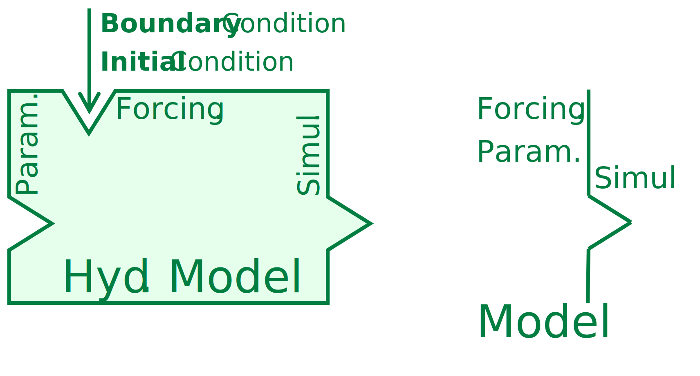

Concept of Modelling
Within the process of hydrological modeling, there are fundamental concepts that play a crucial role. In this article, we will elucidate these concepts through illustrative figures, enhancing your comprehension. These concepts can be categorized into two main parts: the Data part, which encompasses aspects related to input data, parameters, and parameter ranges, and the Process part, which outlines the workflow of the entire modeling process. By exploring these concepts and their visual representations, you’ll gain a deeper understanding of hydrological modeling.
1 Data
1.1 Forcing Data / Boundary Condition Data
For hydrological modeling, you need data that describes the boundary conditions or forcing factors affecting the model. This includes information on precipitation, temperature, humidity, and other meteorological variables.
1.2 Initial Condition Data & Warm-up Time
Initial conditions represent the state of the watershed or catchment at the beginning of the simulation. Warm-up time refers to the period during which the model is run to reach a stable state before starting the actual simulation.
1.3 Parameter
Parameters are essential components of hydrological models. There are three main model categories:
Physical-based models (white box): These models simulate processes with detailed data and deterministic formulas, ideally requiring no parameters.
Conceptual models (gray box): These models, which are the most commonly used, rely on parameters that represent physical characteristics of the watershed. Calibration is typically needed.
Empirical and data-driven models (black box): These models rely heavily on observed data and may not have explicit physical representations.
1.3.1 Initial Parameters
Initial parameters represent the initial values of model parameters at the beginning of the simulation.
1.3.2 Parameter Range
Parameter ranges define the possible values that model parameters can take within certain bounds.
1.3.3 Calibrated Parameters
Calibrated parameters are fine-tuned to optimize model performance and make model predictions more accurate.
1.3.4 Validated Parameters
Validated parameters are parameters that have been verified through comparison with observed data to ensure that the model accurately represents the real-world system.
1.3.5 Parameter Mapping with Groups
Parameters can be organized into groups based on their characteristics, simplifying the modeling process.
2 Process
2.1 Model Running
The core step in hydrological modeling involves running the model using the provided forcing data, initial conditions, and parameter values. This phase represents the simulation of the hydrological processes within the watershed or catchment.

2.2 Evaluation
After the model run, an evaluation process is conducted to assess the performance of the model. This involves comparing the model’s simulated output to observed data or reference values. Various performance metrics and statistical measures are used to determine how well the model simulates real-world conditions.
2.3 Calibration
Calibration is a critical step in hydrological modeling. It involves adjusting the model’s parameters to improve its accuracy and alignment with observed data. Optimization techniques are often used to find parameter values that minimize the difference between model output and observed data.
2.4 Validation
Once the model has been calibrated, it is essential to validate its performance. Validation involves testing the calibrated model against independent datasets or data from a different time period. This step ensures that the model’s performance is not solely tailored to the calibration data but remains reliable for a broader range of conditions.